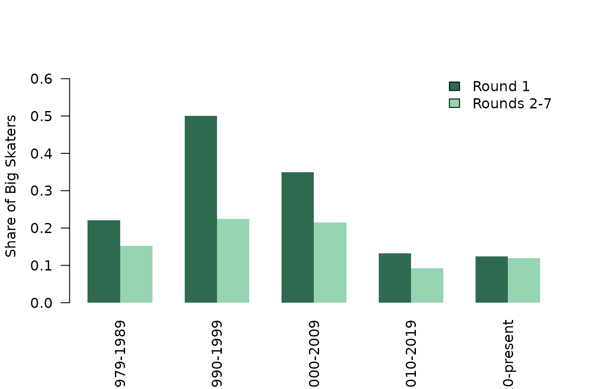

When Did NHL Teams Draft the Biggest Skaters?
Source:vignettes/draft-size-bias.Rmd
draft-size-bias.RmdQuestion
Draft rooms have always loved the language of size: frame, reach, length, projectable build. But was the league always equally obsessed with bigger skaters, or did that preference peak in a particular era?
This article uses nhlscraper::draft_picks() to turn that
old scouting cliché into a measurable history. The mini research
question is:
When was the NHL draft most tilted toward bigger skaters, especially in the first round?
We will keep the analysis intentionally simple: height, weight, round, position, and draft year. That is enough to show how the top of the draft board changed over time.
Build Sample
We keep skaters from 1979 onward, drop goalies, require measured height and weight, and limit the comparison to Rounds 1 through 7 so older marathon drafts do not distort the later-round pool.
# Pull draft picks.
draft_tbl <- nhlscraper::draft_picks()
# Keep modern skater sample.
draft_tbl <- draft_tbl[
draft_tbl[['draftYear']] >= 1979 &
draft_tbl[['roundNumber']] <= 7 &
draft_tbl[['positionCode']] != 'G' &
!is.na(draft_tbl[['height']]) &
!is.na(draft_tbl[['weight']]),
,
drop = FALSE
]
# Create analysis buckets.
draft_tbl[['roundBucket']] <- ifelse(
draft_tbl[['roundNumber']] == 1,
'Round 1',
'Rounds 2-7'
)
draft_tbl[['era']] <- cut(
draft_tbl[['draftYear']],
breaks = c(1978, 1989, 1999, 2009, 2019, Inf),
labels = c(
'1979-1989',
'1990-1999',
'2000-2009',
'2010-2019',
'2020-present'
)
)
draft_tbl[['positionBucket']] <- ifelse(
draft_tbl[['positionCode']] == 'D',
'Defense',
'Forward'
)
draft_tbl[['tallSkater']] <- draft_tbl[['height']] >= 74
draft_tbl[['bigSkater']] <- draft_tbl[['height']] >= 74 &
draft_tbl[['weight']] >= 205
nrow(draft_tbl)
#> [1] 8357That gives us 8357 drafted skaters. The sample is broad enough to study eras, but narrow enough that “later round” means roughly the same thing across modern draft history.
First Look: Era and Round
If size was truly prized near the top of the board, first-round skaters should be bigger than later-round skaters in most eras.
# Summarize size by era and round bucket.
era_summary <- aggregate(
cbind(height, weight, tallSkater, bigSkater) ~ era + roundBucket,
data = draft_tbl,
FUN = mean
)
era_counts <- aggregate(
height ~ era + roundBucket,
data = draft_tbl,
FUN = length
)
names(era_counts)[names(era_counts) == 'height'] <- 'n'
era_summary <- merge(
era_summary,
era_counts,
by = c('era', 'roundBucket')
)
era_summary <- era_summary[, c(
'era',
'roundBucket',
'n',
'height',
'weight',
'tallSkater',
'bigSkater'
)]
make_table(
era_summary,
caption = 'Drafted skater size by era and draft bucket.',
digits = 3
)| era | roundBucket | n | height | weight | tallSkater | bigSkater |
|---|---|---|---|---|---|---|
| 1979-1989 | Round 1 | 226 | 72.934 | 200.659 | 0.363 | 0.221 |
| 1979-1989 | Rounds 2-7 | 1225 | 72.509 | 193.566 | 0.322 | 0.153 |
| 1990-1999 | Round 1 | 232 | 74.060 | 209.534 | 0.608 | 0.500 |
| 1990-1999 | Rounds 2-7 | 1405 | 73.260 | 197.044 | 0.433 | 0.224 |
| 2000-2009 | Round 1 | 278 | 73.694 | 203.086 | 0.536 | 0.349 |
| 2000-2009 | Rounds 2-7 | 1693 | 73.162 | 195.432 | 0.435 | 0.214 |
| 2010-2019 | Round 1 | 296 | 72.889 | 189.757 | 0.368 | 0.132 |
| 2010-2019 | Rounds 2-7 | 1609 | 72.575 | 186.634 | 0.331 | 0.093 |
| 2020-present | Round 1 | 217 | 73.157 | 189.281 | 0.424 | 0.124 |
| 2020-present | Rounds 2-7 | 1176 | 73.038 | 186.145 | 0.419 | 0.120 |
The first-round premium is visible almost everywhere, but the 1990s and 2000s stand out. That was the period when spending a premium pick on a bigger skater looked most normal. The modern top of the board is still not small, but it is not the same size arms race.
Plot the Size Cycle
A rolling average makes the shape easier to see than era bins alone.
# Compute annual first-round and later-round height.
annual_height <- aggregate(
height ~ draftYear + roundBucket,
data = draft_tbl,
FUN = mean
)
annual_height <- annual_height[order(
annual_height[['roundBucket']],
annual_height[['draftYear']]
), ]
annual_height[['rollHeight']] <- ave(
annual_height[['height']],
annual_height[['roundBucket']],
FUN = function(x) as.numeric(stats::filter(x, rep(1 / 5, 5), sides = 2))
)
round_one <- annual_height[annual_height[['roundBucket']] == 'Round 1', ]
later_rounds <- annual_height[annual_height[['roundBucket']] == 'Rounds 2-7', ]
graphics::plot(
round_one[['draftYear']],
round_one[['rollHeight']],
type = 'l',
lwd = 2.5,
col = '#003049',
ylim = range(annual_height[['rollHeight']], na.rm = TRUE),
xlab = 'Draft Year',
ylab = 'Average Height (Inches)'
)
graphics::lines(
later_rounds[['draftYear']],
later_rounds[['rollHeight']],
lwd = 2.5,
col = '#f77f00'
)
graphics::abline(v = c(1990, 2000, 2010, 2020), lty = 3, col = '#adb5bd')
graphics::legend(
'topright',
legend = c('Round 1', 'Rounds 2-7'),
col = c('#003049', '#f77f00'),
lwd = 2.5,
bty = 'n'
)
Five-draft rolling average height by draft bucket.
The graph has a real arc: build up, peak, cool down. The first-round line rises hardest into the 1990s and remains elevated into the 2000s. Later rounds follow the same broad climate, but less aggressively. That is the fingerprint of a top-of-board preference rather than a league-wide measurement artifact.
Tall Is One Thing; Big Is Another
Height alone can make a player sound physically imposing. Weight adds another dimension. Here we ask how often teams drafted skaters who were both at least 6-foot-2 and at least 205 pounds.
# Summarize big-skater share by era and round bucket.
big_share <- aggregate(
bigSkater ~ era + roundBucket,
data = draft_tbl,
FUN = mean
)
big_share <- merge(
big_share,
era_counts,
by = c('era', 'roundBucket')
)
big_share <- big_share[
order(big_share[['era']], big_share[['roundBucket']]),
]
make_table(
big_share,
caption = 'Share of drafted skaters at least 6-foot-2 and 205 pounds.',
digits = 3
)| era | roundBucket | bigSkater | n |
|---|---|---|---|
| 1979-1989 | Round 1 | 0.221 | 226 |
| 1979-1989 | Rounds 2-7 | 0.153 | 1225 |
| 1990-1999 | Round 1 | 0.500 | 232 |
| 1990-1999 | Rounds 2-7 | 0.224 | 1405 |
| 2000-2009 | Round 1 | 0.349 | 278 |
| 2000-2009 | Rounds 2-7 | 0.214 | 1693 |
| 2010-2019 | Round 1 | 0.132 | 296 |
| 2010-2019 | Rounds 2-7 | 0.093 | 1609 |
| 2020-present | Round 1 | 0.124 | 217 |
| 2020-present | Rounds 2-7 | 0.120 | 1176 |
# Plot big-skater share by era.
round_levels <- c('Round 1', 'Rounds 2-7')
big_matrix <- rbind(
big_share[['bigSkater']][big_share[['roundBucket']] == round_levels[1]],
big_share[['bigSkater']][big_share[['roundBucket']] == round_levels[2]]
)
graphics::barplot(
big_matrix,
beside = TRUE,
col = c('#2d6a4f', '#95d5b2'),
border = NA,
ylim = c(0, max(big_matrix, na.rm = TRUE) * 1.25),
names.arg = levels(draft_tbl[['era']]),
las = 2,
ylab = 'Share of Big Skaters'
)
graphics::legend(
'topright',
legend = round_levels,
fill = c('#2d6a4f', '#95d5b2'),
bty = 'n'
)
Share of big skaters by era and round bucket.
This version makes the first-round story louder. Bigger bodies were not merely available in the draft pool; teams were more willing to spend their most valuable picks on them during the peak-size era.
Separate Defensemen From Forwards
The obvious objection is positional mix. Defensemen are bigger than forwards, so maybe the era pattern is just a defenseman pattern. We can split the sample by position family before jumping to conclusions.
# Summarize size by era and position family.
position_summary <- aggregate(
cbind(height, weight, bigSkater) ~ era + positionBucket,
data = draft_tbl,
FUN = mean
)
position_counts <- aggregate(
height ~ era + positionBucket,
data = draft_tbl,
FUN = length
)
names(position_counts)[names(position_counts) == 'height'] <- 'n'
position_summary <- merge(
position_summary,
position_counts,
by = c('era', 'positionBucket')
)
make_table(
position_summary,
caption = 'Drafted skater size by era and position family.',
digits = 3
)| era | positionBucket | height | weight | bigSkater | n |
|---|---|---|---|---|---|
| 1979-1989 | Defense | 73.139 | 198.336 | 0.224 | 518 |
| 1979-1989 | Forward | 72.262 | 192.636 | 0.130 | 933 |
| 1990-1999 | Defense | 74.088 | 203.200 | 0.358 | 589 |
| 1990-1999 | Forward | 72.972 | 196.349 | 0.210 | 1048 |
| 2000-2009 | Defense | 73.915 | 201.045 | 0.325 | 714 |
| 2000-2009 | Forward | 72.852 | 193.936 | 0.181 | 1257 |
| 2010-2019 | Defense | 73.255 | 190.180 | 0.128 | 713 |
| 2010-2019 | Forward | 72.246 | 185.289 | 0.081 | 1192 |
| 2020-present | Defense | 73.907 | 191.004 | 0.177 | 504 |
| 2020-present | Forward | 72.575 | 184.156 | 0.089 | 889 |
Defensemen are bigger in every era, as expected. But the 1990s/2000s pattern does not vanish. The draft’s size cycle shows up inside position families, not only because teams drafted more defensemen.
Estimate First-Round Premium
A simple model helps summarize the top-of-board effect while controlling for position and broad era.
# Fit height model.
height_fit <- stats::lm(
height ~ era + I(roundNumber == 1) + positionBucket,
data = draft_tbl
)
height_fit_tbl <- as.data.frame(summary(height_fit)$coefficients)
height_fit_tbl[['term']] <- rownames(height_fit_tbl)
rownames(height_fit_tbl) <- NULL
height_fit_tbl <- height_fit_tbl[, c(
'term',
'Estimate',
'Std. Error',
't value',
'Pr(>|t|)'
)]
make_table(
height_fit_tbl,
caption = 'Linear model of drafted skater height.',
digits = 4
)| term | Estimate | Std. Error | t value | Pr(>|t|) |
|---|---|---|---|---|
| (Intercept) | 73.1966 | 0.0603 | 1213.5937 | 0.0000 |
| era1990-1999 | 0.8028 | 0.0716 | 11.2095 | 0.0000 |
| era2000-2009 | 0.6635 | 0.0687 | 9.6574 | 0.0000 |
| era2010-2019 | 0.0303 | 0.0692 | 0.4378 | 0.6615 |
| era2020-present | 0.4767 | 0.0745 | 6.3988 | 0.0000 |
| I(roundNumber == 1)TRUE | 0.4803 | 0.0610 | 7.8775 | 0.0000 |
| positionBucketForward | -1.0834 | 0.0452 | -23.9756 | 0.0000 |
The model is not meant to be a final draft theory. It is a compact check on the pattern. The first-round coefficient stays positive after accounting for era and position family, which matches the visual story: teams have historically paid a premium for size near the top of the board.
What We Learned
The draft’s size preference looks cyclical, not linear. The 1990s and 2000s were the loudest size eras in this sample, especially in Round 1. Since then, the top of the board has become less extreme, even though first-round skaters remain bigger than later-round skaters on average.
That is the useful lesson for nhlscraper: a simple
endpoint like draft_picks() can answer a surprisingly rich
historical question when you reshape it carefully. The package gives you
the raw ingredients; the fun starts when you turn those ingredients into
a hockey argument someone would actually want to debate.